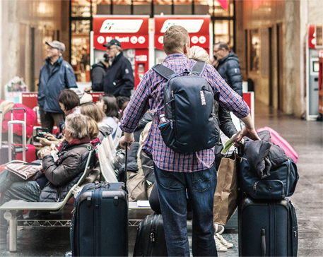
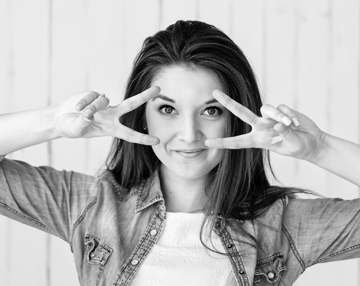

Главная страница школы английского языка 'Yes'
Ускоренный2-месячный курс английского языка
Освойте английский для путешествий и научитесь объясняться в любой ситуации
Записаться на пробное занятиеБывали ли вы в подобных ситуациях
Вы думали, что знаете английский, но в гостинице с трудом выговариваете, какой номер вам нужен
Вы смогли спросить, до какой станции метро нужно дойти, но не поняли, куда вас отправили

В аэропорту при любом подозрении на задрежку, вы ищите представителя, хоть как-то говоряшего по-русски
- в итоге...
Все это портит впечатление от отдыха и отбивает желание посещать новые страны
Мы предусмотрели эти ситуации
- Значение
- Разбираем те ситуации, с которыми сталкивается путешественник
- Понимание
- Учим объясняться сами и понимать, что говорят другие
- Практика
- Проводим диалоги с преподавателями и носителями языка
Кто ведет курс
-
Алла Ристовская
Занимается преподаванием английского языка с 2007 года. За 7 лет практики Алла занималась более чем с 80 студентами.
Очень любит путешествовать: неоднократно бывала зарубежом, проходила практику в США (Нью-Йорк) и Великобритании (Лондон).
 - Анастасия Левчук
Закончила Алтайскую Государственную педагогическую Академию по специальности "теория и методика преподавания иностранных языков и культур".
Также имеется дополнительная квалификация "переводчик в сфере профессиональной коммуникации".
- Евгений Пак
Сетифицированный спеуиалист (диплом ОмГПУ, TTC в Кембридже, TESOL в Лондоне). Имеет богатый опыт работы на английском языке: от обучения в языковых школах до выполнения функции переводчика на различных конференциях.
Более года Евгений жил в г. Сиэтл (США).
Что входит в стоимость
21 000 рублей
Вы пройдете 2-месячную программу по 2 занятия в неделю, в конце каждой из которых сможете самостоятельно построить диалог
-
1 неделя - аэропорт
Вылет-прилет, регистрация, специальный и пограничный, потеря багажа, задержка рейса
-
2 неделя - дорога, трансфер
Поиск транспорта, пункты назначения, общение с водителем (уточнения, просьбы, остановки)
- 3 неделя - гостиница, ночлег
Поиск ночлега, бронирование, уточнение условий проживания, решение проблем с персоналом
- 4 неделя - культурный отдых
Покупка билетов, туров, уточнение обстоятельств, потеря напарника, сопровождающего.
- 5 неделя - местность, поиск
Выяснение дороги, направления, местонахождения (собственного и необходимых мест)
- 6 неделя - магазины
Выбор, общение с продавцами, выяснение цены, торг, покупка, возврат, случаи мошеничества
- 7 неделя - общение с местными
Непринужденные беседы, вопросы, просьбы о помощи, совместный обед, времяпрепровождения
- 8 неделя - неожиданные ситуации
Разбор непредвиденных случаев (потеря документов, обращение в полицию, скорую)
Отзывы студентов
Александра ИвановаКурс прошел незаметно и оставил после себя только хорошие воспоминания. Нашу группу на постоянной основе вела Алла, Настя и Женя приходили к нам для нарабатывания практики общения.
Неделю назад были с мужем в Лондоне - хоть люди разные и речь у всех разная, но было так легко и спокойно! Мы ни разу не заблудились, в аэропорту меня водила за собой пожилая пара в качестве переводчика.
Спасибо вам, это было очень полезно!
Александра ИвановаКурс прошел незаметно и оставил после себя только хорошие воспоминания. Нашу группу на постоянной основе вела Алла, Настя и Женя приходили к нам для нарабатывания практики общения.
Неделю назад были с мужем в Лондоне - хоть люди разные и речь у всех разная, но было так легко и спокойно! Мы ни разу не заблудились, в аэропорту меня водила за собой пожилая пара в качестве переводчика.
Спасибо вам, это было очень полезно!
Александра ИвановаКурс прошел незаметно и оставил после себя только хорошие воспоминания. Нашу группу на постоянной основе вела Алла, Настя и Женя приходили к нам для нарабатывания практики общения.
Неделю назад были с мужем в Лондоне - хоть люди разные и речь у всех разная, но было так легко и спокойно! Мы ни разу не заблудились, в аэропорту меня водила за собой пожилая пара в качестве переводчика.
Спасибо вам, это было очень полезно!
Александра ИвановаКурс прошел незаметно и оставил после себя только хорошие воспоминания. Нашу группу на постоянной основе вела Алла, Настя и Женя приходили к нам для нарабатывания практики общения.
Неделю назад были с мужем в Лондоне - хоть люди разные и речь у всех разная, но было так легко и спокойно! Мы ни разу не заблудились, в аэропорту меня водила за собой пожилая пара в качестве переводчика.
Спасибо вам, это было очень полезно!